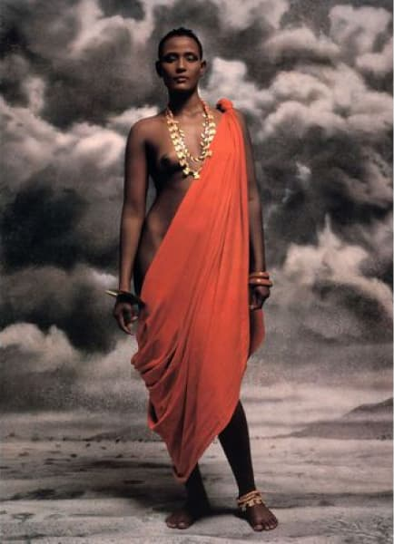
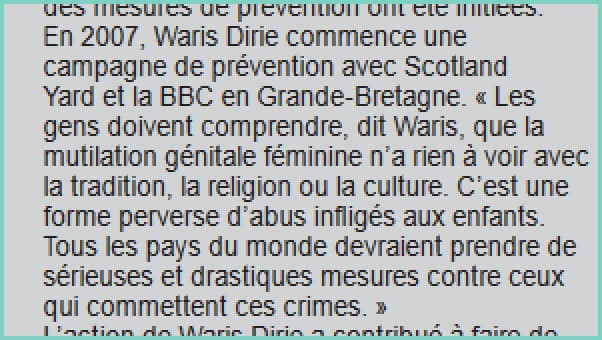

Waris Dirie est une femme, né le 21 octobre 1965 à Gaal Kacyo en Somalie, de nationalité Somalienne et Autrichienne.
Waris prit la fuite à l’âge de 13 ans quand son père décida de la marier à un homme de 60 ans.
C’est quand elle travaillait dans un fast-food, que Waris à été remarquée par un célèbre photographe Terence Donovan.
Une carrière de mannequin commença en 1987 en couverture de “Calendrier Pirelli”.

Lors d’une interview Waris révèle l’excision dont elle fût victime à l’âge de 5 ans.
Elle écrit son premier livre autobiographique “Fleur du désert” en 1998, son livre étant le plus connu.
Elle en écrit d’autres comme :
L'Aube du --, A Letter to My Mother, Black Women, White Country, Safa et Desert Children.
C’est lors d’une entrevue du magazine Marie Claire, au milieu des années 1990 qu’elle décida de témoigner de son excision et de celle que des miliers de filles et femmes qui le subissent encore en Afrique.
Ca lutte contre l’excision
Elle commença en 2002, quand elle décida d’en parler.
Elle décida de fonder la “WARIS DIRIE FOUNDATION”.
En février 2005, elle rencontre 25 ministres d’Etat membres pour discuter des mesures à prendre pour lutter contre les MGF.
En 2006, L’Union Européenne combat officiellement l’excision pour la première fois de l’histoire.
En 2007, Waris Dirie commence une campagne de prévention avec Scotland Yard et la BBC en Grande-Bretagne.
Warris dit :
« Les gens doivent comprendre que la mutilation génitale féminine n’a rien à voir avec la tradition, la religion ou la culture. C’est une forme perverse d’abus infligés aux enfants. Tous les pays du monde devraient prendre de sérieuses et drastiques mesures contre ceux qui commettent ces crimes. »

Grâce à la pression de la communauté internationale, 14 États africains dont le Kenya, le Ghana, le Burkina Faso, la Côte d’Ivoire, la République de Centre Afrique, le Bénin et le Togo ont déclaré la pratique de l’excision totalement illégale depuis 2007.
En janvier 2009, elle devient membre du Conseil d’administration de la nouvelle Fondation d’Entreprise PPR pour la Dignité et les Droits des Femmes, soutien d'une vingtaine de projets en partenariat avec les ONG locales et internationales, notamment au Mali, en Inde, au Pakistan, au Nicaragua et en France.
Waris est une femme ayant subit énormément de choses dans ça vie, principalement dans son enfance qui fut intense et pas toujours très joyeuse.
Dans l’article “Fleur du désert”, une petite partie de sa vie sera revue.